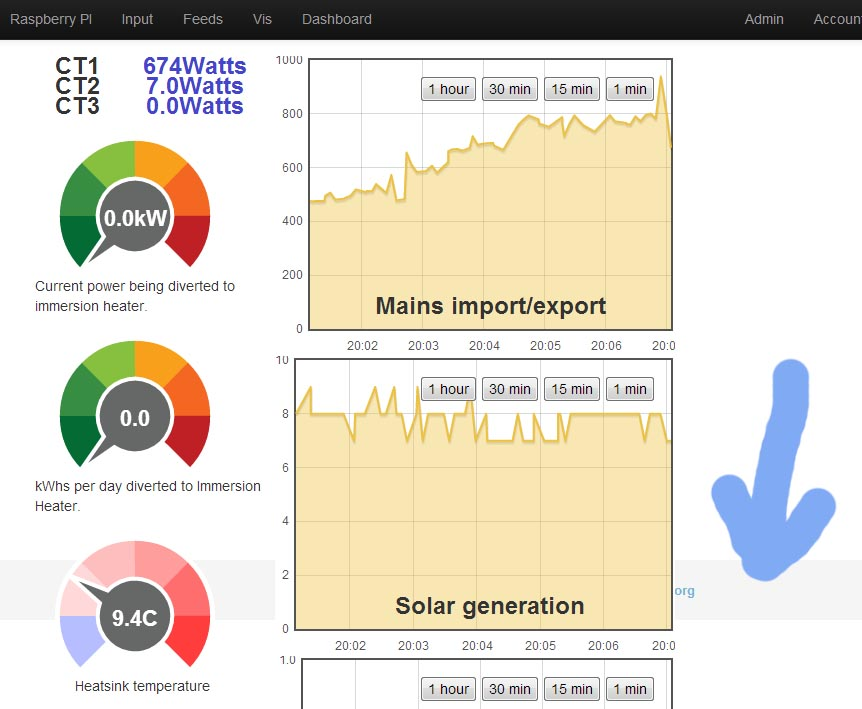

Emoncms bug and dev list FEBRUARY 2013
The following is a summary of the emoncms development threads underway at the moment. To see previous months see:
Emoncms bug and dev list December, November, October
A bug list needs to be added below, there's probably a few that carry over from previous months.
Core Framework Development
See blog post: Ideas for improving the emoncms framework
Documentation todo
- Core framework documentation - how to build the core emoncms framework from scratch - replacing the current emoncms architecture documentation to reflect the emoncms design as detailed in the blog post above.
- A page on how the emoncms DB table schema and builder works and how to integrate mysql tables and mysqli in new modules.
- An example module template and a guide on building a new module.
Module development
Event module
The newest module in development is the event module which Nick Boyle has been pushing forward with notifications by email, twitter and prowl of when a feed is equall to, more than, less than, increases by and decreases by a particular value.
Event module github: https://github.com/emoncms/event
Forum thread: http://openenergymonitor.org/emon/node/1645
User module
I've been working on a new user interface for the user module that's js jquery based and would like to implement normal user account authentication features like email validation, password reset and so on. Will push this all to github soon.
Sync module
At the moment the sync module interface is a bit clumsy to use, adding a new feed to the import list takes you to the top of the page and the page needs to be manually refreshed to see how the import is progressing - id like to move it all over to a js interface.
The sync module is also missing the ability to sync histogram type feeds and other user data such as input configuration and dashboards.
Beyond this I would like to have an admin sync page which allows syncing of feeds for all users, I'm hoping this will be an effective way to do incremental backup of emoncms.org. Although mysql replication may be another good option to look at for this.
Admin module
At the moment features for managing use and diagnosing performance problems on emoncms.org are limited. The load on the server seems gets pretty high sometimes and its not clear why. So really improving server monitoring features would be a big plus.
Raspberry PI module
We've been discussing here https://github.com/emoncms/raspberrypi/issues/5 how raspberrypi_run.php can be ran as a daemon and how we can extract feedback from the script to be displayed in the raspberry pi emoncms GUI so that script running errors can be better detected and solved.
Re: Emoncms bug and dev list FEBRUARY 2013
There seems to be a new emoncms.org version. Thanks for thar, excellent work!! Did not find bug list for march so add here that maybe something has changed as sudenly lost negative temperatures. Have recompiled also nanoderf so can not be fully sure that its inside emoncms.org, but likely as have not changed anuthing even close that would affect how signa are handled.
Re: Emoncms bug and dev list FEBRUARY 2013
Something changed today, thank you - negative numbers are back - or i have a software bug in firmware.
Re: Emoncms bug and dev list FEBRUARY 2013
The footer still does not automatically locate to the bottom of the page.
I realize that this was raised in the bug list of Oct 2012, and has been marked as fixed in the new modular version, but I believe that's what I'm running.

Re: Emoncms bug and dev list FEBRUARY 2013
1 Bug:
- The remember me feature on the login does not appear to remember the user/pass in firefox.
1 Improvement:
- When you add a rawdata visualization to the dashboard it would be good to have the option of specifying is this is to display, weekly/daily/monthly/yearly by default instead of the current default behavior of weekly.
Re: Emoncms bug and dev list FEBRUARY 2013
Thanks Petrik, Negative numbers disappearing where an emoncms bug in the new version that I then fixed
Re: Emoncms bug and dev list FEBRUARY 2013
Hello Paul, ahh interesting, I will look into that I may well have missed reimplementing that in the dev version.
tdereus, yes the remember me feature isnt fully working yet, hence why I disabled it on emoncms.org, need to work on it a bit more. Good idea for specifying the default view behaviour that would be a good way to do it, will add it to the list.
Re: Emoncms bug and dev list FEBRUARY 2013
I can't get the dev version to send back the time (either to a NanodeRF or manually in the browser for that matter).
Has the format for the time request been changed, or is this a quirk of PHP and Windows? I'm running it under Wampserver and Windows XP. I'm aware that some PHP functions don't work the same under Windows, and a few don't work at all.
A point re the Git example sketches: The dev version appears to accept incoming data only in the format "..../input/post.json?.....", so many of these I think are wrong and won't work.
Re: Emoncms bug and dev list FEBRUARY 2013
I found a problem with simplezoom that might be 'triggered' by my special system configuration (I have positive and negative mains power values due to my pv-system feeding back on phase 1).
When I zoom into the data in a region with negative power values, the average is correctly shown as (e.g.) -350W, but the energy sum is always positive like: Average: -350W | 1.6kWh.
This is due to Math.abs being used on the result of (only) the energy value calculation (in proc.js). Does this make sense or is it necessary to do this for other reasons?
I have just removed this abs calculation and everything seems ok for me.
(Might be slightly off-topic, but after making this change, my three-phase power measurement with emonTx with added MCP3208 12 bit ADC, one phase voltage probe, Emoncms on Pi is accurate to better than +/- 2% compared to my ferraris elctricity counter. Runs for over two months now without any problems. Very impressive!)
BR, Jörg.
Re: Emoncms bug and dev list FEBRUARY 2013
I have just installed the latest version and I am unable to modify dashboard names or save any account details. Any ideas?
Re: Emoncms bug and dev list FEBRUARY 2013
In one of the older versions you could not use the ° symbol. It would print something weird.
In V5 the ° symbol is just ignored (not printed at all).
Does anyone know how to solve this?
Re: Emoncms bug and dev list FEBRUARY 2013
I have pointed my OKG back to emoncms.org and have noticed that the kWh/d calculation resets at UTC. Is there anyway to force the day to reset as per my timezone setting in the account details?
Re: Emoncms bug and dev list FEBRUARY 2013
The footer bug reported by Paul Reed is actually the dashboard having wrong height saved to database. I've proposed a fix for it here: https://github.com/emoncms/emoncms/pull/75
Cheers
Re: Emoncms bug and dev list FEBRUARY 2013
Erik. I have presently drawn a white container to completely cover the footer, so once your pull request is merged, I'll update and remove the container.
Thanks for making the contribution, it's appreciated.
Paul
Re: Emoncms bug and dev list FEBRUARY 2013
a few observations i made..
the jgauge is a bit off, i use it to show temp... if the temp is 20 the needle is 1 or 2 below that
i could use a few more containers like a circle etc.. an option if they are filled or not.. ie so i could create a copy of what a real meter looks like etc
i'm not sure but it seems that dasboard area is not always the same.
could be nice if just the dashboard area could be embedded on a site and not the whole emoncms page... maybe with a simple dashboard selector on top
Re: Emoncms bug and dev list FEBRUARY 2013
oh forgot this one...
saving a dashboard the botton says sauvegardé... is that some special english dialekt? :-D